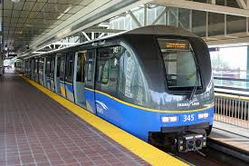

The City of Vancouver works with TransLink, who plans and manages public transit services for the Metro Vancouver area.
Get to know the names of the City's public transportation modes so you can get around the City more easily. A link to a specific TransLink trip planner is placed beside each mode.
|  |
SkyTrain Rapid transit refers to the automated trains that run above and below ground. SkyTrain consists of the Expo Line and the Millennium Line. A third system called the Canada Line provides the travel from the airport to Downtown Vancouver. |
Buses TransLink provides continuous bus service throughout the day. In addition to traditional buses are express lines that make fewer stops, or smaller community shuttles that carry fewer passengers to specific areas of the City. |
|
SeaBus The Seabus crosses the Burrard Inlet to provide travel between Waterfront Station in Downtown Vancouver to Lonsdale Quay in North Vancouver. |
|
HandyDART HandyDART is a door-to-door shared-ride service for people with physical or cognitive disabilities who need assistance to use public transit. Find eligibility requirements and other information on TransLink’s HandyDART website. |
|
West Coast Express The West Coast Express is a driver-led train that connects Waterfront Station in Downtown Vancouver to Mission, with select stops along the way. On weekdays, five trains plus an additional three TrainBus coach buses travel into Vancouver in the morning, and leave Vancouver in the afternoon. |